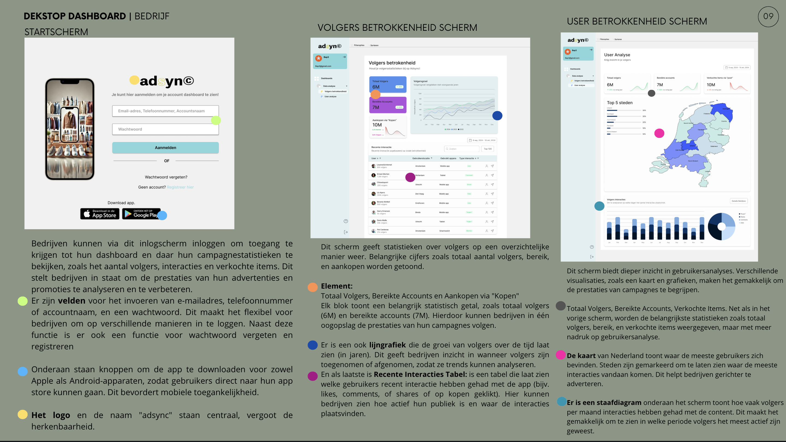
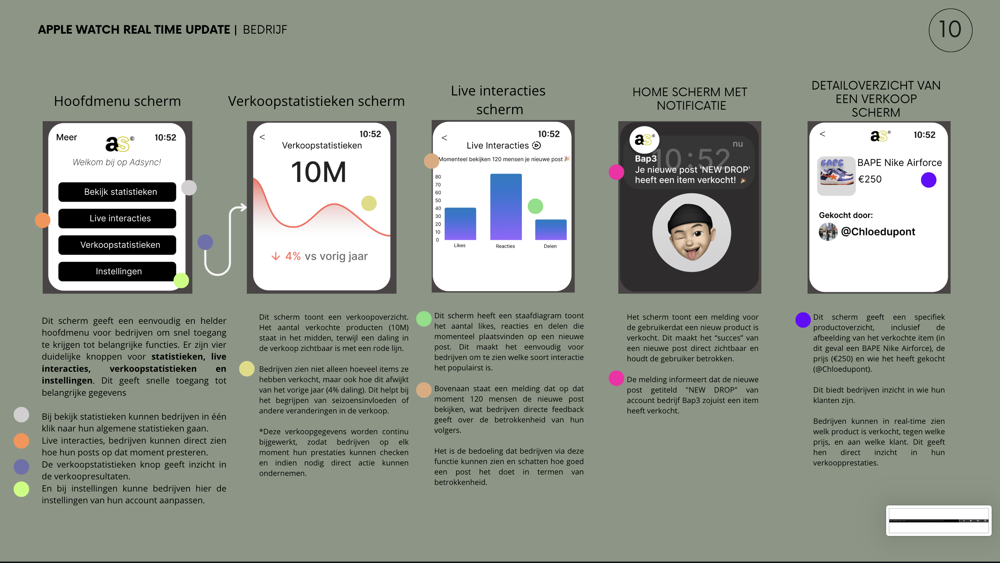

H2
 Een bedrijf wil een nieuw product promoten via social media. Mensen die de post zien, zijn volgers of klanten. Het bedrijf zorgt voor de campagne, terwijl social media platforms data verzamelen, zoals likes en reacties en verkochte items via de apparaten van de gebruikers.
Eindgebruiker:
De eindgebruiker is de klant of volger van de app. Dit zijn mensen die de app gebruiken om producten en post, update van bedrijven te bekijken, te liken, er op reageren of kopen. Dit kunnen consumenten zijn die op zoek zijn naar producten, of mensen die updates van bedrijven willen volgen.
De data wordt verzameld via de app die zowel door bedrijven als eindgebruikers wordt gebruikt. Dit gebeurt op de volgende manieren:
De app houdt bij hoe gebruikers omgaan met advertenties (bijvoorbeeld door te klikken, te liken, te reageren of kopen).
De gegevens worden verzameld via smartphones of tablets waarmee gebruikers de app gebruiken.
De app gebruikt een platform om te meten hoe de gebruikers zich gedragen, bijvoorbeeld hoe vaak ze op een advertentie klikken, hoe lang ze de app gebruiken en hoeveel aankopen er worden gedaan.
Bedrijven voegen ook hun eigen gegevens toe, zoals informatie over de producten die ze promoten of verkopen.
Tijdens deze opdracht heb ik geleerd hoe bedrijven social media en apps gebruiken om producten te promoten en data te verzamelen. Ik begrijp nu beter hoe data wordt verzameld via gebruikersgedrag, apparaten en extra informatie van bedrijven. Dit is voor mij een nieuwe ervaring en het was best moeilijk, omdat het de eerste keer is dat ik zoiets moest maken. Ondanks de uitdaging vond ik het leerzaam en interessant om meer inzicht te krijgen in hoe data en advertenties werken.